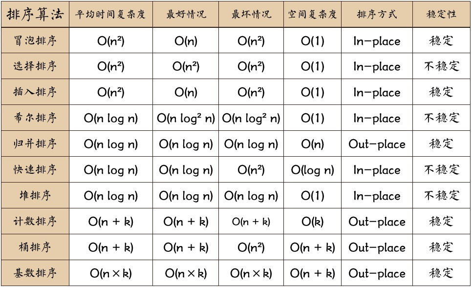

算法在于理解其原理，本篇记录备忘。
日本程序员norahiko，写了一个排序算法的动画演示，非常有趣。

冒泡排序
原理：
（1）比较相邻两个数，如果前者大于后者，就把两个数交换位置。
（2）对每一对相邻的元素做同样的工作。
1 2 3 4 5 6 7 8 9 10 11 12 13 14 15
| function bubbleSort(arr){ var len = arr.length,j; var temp; while(len > 0){ for( j = 0; j < len - 1; j++){ if(arr[j] > arr[j + 1]){ temp = arr[j]; arr[j] = arr[j + 1]; arr[j + 1] = temp; } } len--; } return arr; }
|
选择排序
原理：
首先在未排序序列中找到最小（大）元素，存放到排序序列的起始位置，然后，再从剩余未排序元素中继续寻找最小（大）元素，然后放到已排序序列的末尾。以此类推，直到所有元素均排序完毕。
1 2 3 4 5 6 7 8 9 10 11 12 13 14 15 16
| function selectSort(arr){ for(var i = 0; i < arr.length - 1; i++){ var min = arr[i]; for(var j = i + 1; j < arr.length - 1; j++){ if(min > arr[j]){ var temp = min; min = arr[j]; arr[j] = temp; } } arr[i] = min; } return arr; }
|
快排算法
“快速排序”的思想很简单，整个排序过程只需要三步：
（1）在数据集之中，选择一个元素作为”基准”（pivot）。
（2）所有小于”基准”的元素，都移到”基准”的左边；所有大于”基准”的元素，都移到”基准”的右边。
（3）对”基准”左边和右边的两个子集，不断重复第一步和第二步，直到所有子集只剩下一个元素为止。
举例来说，现在有个数据集合[85, 24, 63, 45, 17, 31, 96, 50]，怎么对其排序呢？
第一步，选择中间的元素45作为”基准”。（基准值可以任意选择，但是选择中间的值比较容易理解。）
[85, 24, 63, 45, 17, 31, 96, 50]
第二步，按照顺序，将每个元素与”基准”进行比较，形成两个子集，一个”小于45”，另一个”大于等于45”。
[24, 17, 31], 45, [85, 63, 96, 50]
第三步，对两个子集不断重复第一步和第二步，直到所有子集只剩下一个元素为止。
[24, 17, 31], 45, [85, 63, 96, 50]
17, [24, 31], 45, [50], 63, [85, 96]
17, [24, 31], 45, 50, 63, [85, 96]
[17, 24, 31, 45, 50, 63, 85, 96]
具体实现
1 2 3 4 5 6 7 8 9 10 11 12 13 14 15 16 17 18 19 20 21 22 23 24 25 26
| var a = [2,4,5,63,4,5,63,2,4,43]; function quicksort(arr){ if (arr.length == 0) return []; var left = new Array(); var right = new Array(); var pivot = arr.splice(pivotIndex, 1)[0]; for (var i = 1; i < arr.length; i++) { if (arr[i] < pivot) { left.push(arr[i]); } else { right.push(arr[i]); } } return quicksort(left).concat(pivot, quicksort(right)); } console.log(quicksort(a));
|
直接插入排序
原理：将无序数列中的元素插入到有序数列的对应位置，插入前通过比大小的方式找到其在有序数列中的对应位置。
排序过程大概如下：
（1）从第一个元素开始，该元素可以认为已经被排序；
（2）取出下一个元素，在已经排序的元素序列中从后向前扫描；
（3）如果该元素（已排序）大于新元素，将该元素移到下一位置；
（4）重复步骤3，直到找到已排序的元素小于或者等于新元素的位置；
（5）将新元素插入到该位置后；
（6）重复步骤2~5。
1 2 3 4 5 6 7 8 9 10 11 12 13 14 15 16
| function insertionSort (arr) { for (var i = 1; i < arr.length; i++) var key = arr[i]; var j = i - 1; arr[i] = arr[j]; while (j >= 0 && key < arr[j]) { arr[j + 1] = arr[j]; j--; } arr[j + 1] = key; } }
|
希尔排序
原理：
希尔排序的实质是分组插入排序，该方法又称缩小增量排序。
该方法的基本思想是：
先将整个待排元素序列分割为若干个子序列（由相隔某个‘增量’的元素组成的）分别进行直接插入排序，然后依次缩减增量再进行排序，带这个序列中的元素基本有序（增量足够小）时，再对全体元素进行一次直接插入排序。因为直接插入排序在元素基本有序的情况下（接近最好情况）效率是很高的，因此希尔排序在时间效率上有较大的提高。
1 2 3 4 5 6 7 8 9 10 11 12 13 14 15 16 17 18 19 20 21 22
| function shellSort(array) { var increment = array.length; var i; var temp; do { increment = Math.floor(increment / 3) + 1; for (i = increment ; i < array.length; i++) { console.log(increment); if (array[i] < array[i - increment]) { temp = array[i]; for (var j = i - increment; j >= 0 && temp < array[j]; j -= increment) { array[j + increment] = array[j]; } array[j + increment] = temp; } } } while (increment > 1) return array; }
|
归并排序
归并排序须知：
作为一种典型的分而治之思想的算法应用，归并排序的实现由两种方法：
- 自上而下的递归（所有递归的方法都可以用迭代重写，所以就有了第2种方法）
- 自下而上的迭代
1 2 3 4 5 6 7 8 9 10 11 12 13 14 15 16 17 18 19 20 21 22 23 24 25 26 27 28 29 30 31
| function mergeSort(arr) { var len = arr.length; if(len < 2) { return arr; } var middle = Math.floor(len / 2), left = arr.slice(0, middle), right = arr.slice(middle); return merge(mergeSort(left), mergeSort(right)); } function merge(left, right) { var result = []; while (left.length>0 && right.length>0) { if (left[0] <= right[0]) { result.push(left.shift()); } else { result.push(right.shift()); } } while (left.length) result.push(left.shift()); while (right.length) result.push(right.shift()); return result; }
|
堆排序
堆排序须知：
堆排序可以说是一种利用堆的概念来排序的选择排序。分为两种方法：
大顶堆：每个节点的值都大于或等于其子节点的值，在堆排序算法中用于升序排列
小顶堆：每个节点的值都小于或等于其子节点的值，在堆排序算法中用于降序排列
1 2 3 4 5 6 7 8 9 10 11 12 13 14 15 16 17 18 19 20 21 22 23 24 25 26 27 28 29 30 31 32 33 34 35 36 37 38 39 40 41 42 43 44
| var len; function buildMaxHeap(arr) { len = arr.length; for (var i = Math.floor(len/2); i >= 0; i--) { heapify(arr, i); } } function heapify(arr, i) { var left = 2 * i + 1, right = 2 * i + 2, largest = i; if (left < len && arr[left] > arr[largest]) { largest = left; } if (right < len && arr[right] > arr[largest]) { largest = right; } if (largest != i) { swap(arr, i, largest); heapify(arr, largest); } } function swap(arr, i, j) { var temp = arr[i]; arr[i] = arr[j]; arr[j] = temp; } function heapSort(arr) { buildMaxHeap(arr); for (var i = arr.length-1; i > 0; i--) { swap(arr, 0, i); len--; heapify(arr, 0); } return arr; }
|
桶排序（Bucket Sort）
桶排序须知：
桶排序是计数排序的升级版。它利用了函数的映射关系，高效与否的关键就在于这个映射函数的确定。
为了使桶排序更加高效，我们需要做到这两点：
在额外空间充足的情况下，尽量增大桶的数量
使用的映射函数能够将输入的N个数据均匀的分配到K个桶中
同时，对于桶中元素的排序，选择何种比较排序算法对于性能的影响至关重要。
什么时候最快（Best Cases）：
当输入的数据可以均匀的分配到每一个桶中
什么时候最慢（Worst Cases）：
当输入的数据被分配到了同一个桶中
桶排序JavaScript代码实现：
1 2 3 4 5 6 7 8 9 10 11 12 13 14 15 16 17 18 19 20 21 22 23 24 25 26 27 28 29 30 31 32 33 34 35 36 37 38 39 40
| function bucketSort(arr, bucketSize) { if (arr.length === 0) { return arr; } var i; var minValue = arr[0]; var maxValue = arr[0]; for (i = 1; i < arr.length; i++) { if (arr[i] < minValue) { minValue = arr[i]; } else if (arr[i] > maxValue) { maxValue = arr[i]; } } var DEFAULT_BUCKET_SIZE = 5; bucketSize = bucketSize || DEFAULT_BUCKET_SIZE; var bucketCount = Math.floor((maxValue - minValue) / bucketSize) + 1; var buckets = new Array(bucketCount); for (i = 0; i < buckets.length; i++) { buckets[i] = []; } for (i = 0; i < arr.length; i++) { buckets[Math.floor((arr[i] - minValue) / bucketSize)].push(arr[i]); } arr.length = 0; for (i = 0; i < buckets.length; i++) { insertionSort(buckets[i]); for (var j = 0; j < buckets[i].length; j++) { arr.push(buckets[i][j]); } } return arr; }
|
基数排序（Radix Sort）
基数排序须知：
基数排序有两种方法：
MSD 从高位开始进行排序
LSD 从低位开始进行排序
基数排序 vs 计数排序 vs 桶排序
这三种排序算法都利用了桶的概念，但对桶的使用方法上有明显差异：
基数排序：根据键值的每位数字来分配桶
计数排序：每个桶只存储单一键值
桶排序：每个桶存储一定范围的数值
1 2 3 4 5 6 7 8 9 10 11 12 13 14 15 16 17 18 19 20 21 22 23 24 25
| var counter = []; function radixSort(arr, maxDigit) { var mod = 10; var dev = 1; for (var i = 0; i < maxDigit; i++, dev *= 10, mod *= 10) { for(var j = 0; j < arr.length; j++) { var bucket = parseInt((arr[j] % mod) / dev); if(counter[bucket]==null) { counter[bucket] = []; } counter[bucket].push(arr[j]); } var pos = 0; for(var j = 0; j < counter.length; j++) { var value = null; if(counter[j]!=null) { while ((value = counter[j].shift()) != null) { arr[pos++] = value; } } } } return arr; }
|
参考：http://www.cnblogs.com/dushao/p/6004883.html